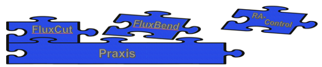
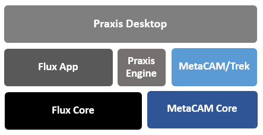

V2 ● 20221104
Praxis is an MES based Application which handles the complete workflow of production in Shop Floor. It interfaces with all other Flux modules like FluxBend, FluxCut, RA(Bend Control) and Vulcan(LaserControl).

● Manages all parts from different customers.
● Creates Jobs for the machines according to Orders.
● Interacts with FluxBend and FluxCut for you to focus on the creative tasks.
● Job with orders is created against customer. Order status can be tracked easily using color code.
● Search and Filters are used to get the user requirements which can be saved & used by other users.
● Interactive Nesting makes nesting more simpler with fewer operational steps.
● Switching the Nest result from one machine to another machine and adding parts to the existing Nest can be done with few clicks.

This is the primary driver application which helps user interact with the praxis system. The application Prax.exe installs in Bin folder and uses other components like Praxis Engine, Flux, MetaCAM to drive the workflow.
A background application which performs all automation tasks assigned to the Praxis System. Powered by Flux Core, the application PEngine instances to perform the automation tasks. The tasks performed by PEngine include: Part Import, Bend tooling, Cut tooling, Nesting and so on. MetaCAM Engine, Trek.exe, is used for cutting and Flux core is used for bending tasks.
Flux application is used for viewing, editing and simulating part’s bend tech tooling. Flux is also used to troubleshooting geometry errors. The application, Flux.exe is installed in the Bin folder.
MetaCAM is used for viewing, editing and simulating cutting tech data. The application, MetaCAM.exe is installed in MetaCAM folder.
Built over MetaCAM core. Trek is used to perform all cutting automation tasks like cut-tooling, auto-nesting. Multiple instances of Trek enable PEngine to perform multiple tasks in one-go. The application Trek.exe is installed in Bin\Trek folder.